田の神さあ/宮崎県えびの市など
南九州地方には田の神さあという農耕神がいる。
田の神といえば全国各地に様々な形で存在しているが南九州の田の神は田の神さあ（たのかんさあ）と呼ばれその独自の進化の過程から特別な存在といえるだろう。
田の神さあの生息地は主に旧薩摩藩エリアといわれており鹿児島県のほぼ全域、宮崎県は南西部に多く見られ、そのほとんどが石像で、路傍や田の畦に鎮座している。
この田の神さあ、どんなところが私の珍寺魂をググッと揺さぶるのかといえば、その多くが色が塗られた石像なのである。
彩色された石像といえば当サイトでは化粧地蔵を紹介したことがあったが、田の神さあも御他聞にもれずファンキーでポンチな仕上がりを見せているのだ。
そんな素敵な田の神さあウオッチング、今回は宮崎県えびの市を中心に回ってみた。
田の神さあは鹿児島県内が主な棲息場だが、今回えびの市に赴いたのには理由がある。鹿児島〜宮崎県内で田の神さあを一番観光資源としてプッシュしているのがえびの市なのだ。事前のリサーチでは鹿児島県内の方が数は多かったし、田の神さあといえば一般的には鹿児島県のものというコンセンサスが出来上がっている。しかし鹿児島全域を回るのもチョット辛いし、どこか効率的に田の神さあ巡りが出来るところはないか、と思っていたところえびの市が浮上したのである。えびの市は田の神さあを市のシンボル化しており、市内の田の神さあ調査を「田の神さあ」という一冊の本に纏めている。その本は市内の田の神さあの全調査と所在が記されており、周辺の主な田の神さあも掲載しているというビッグな企画っぷり。ハッキリいってこの本のおかげで田の神さあ巡りを決意した程の傑作です。えびの市教育委員会、エライ！
・・・などと散々えびの市を持ち上げておきながら田の神さあ巡りのプロローグは隣の小林市から始まる。
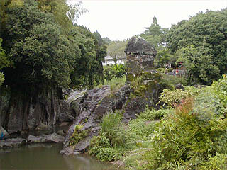
小林市に日本最大といわれる陰陽石がある。
それはそれとしてその陰陽石を望むビューポイントに田の神さあが大量に祀られているのだ。
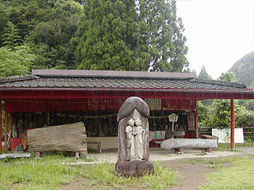 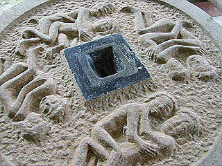
一カ所にまとめられた田の神さあ。場所柄木彫り珍子や変な賽銭箱などエロ臭漂いまくり。
しかしそれは今回の本題ではないのではなはだ不本意ではありますがあえて無視させていただきます。
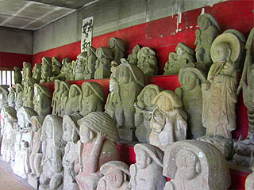 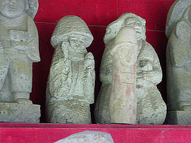
田の神さあには大きく分けて神官型、地蔵型、農民型、自然石型などがある。
その中でも注目なのは農民型である。しゃもじとご飯を盛った茶碗を掲げているその姿は非常にユーモラス、というより神様とは思えない。
どちらかと言うとその辺のおっさんが「ホレ、飯食え」と言っているような呑気な雰囲気が漂う逸品なのだ。
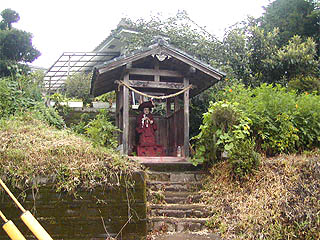 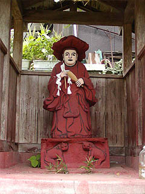
で、その陰陽石の入口にある田の神さあ。
赤い衣にしゃもじと幣束を持った、この田の神さあは大きさも等身大でかなり大型のものだ。
シワを黒く塗ってあるところなどが蛇足っぽくてイイ。宮崎を代表する田の神さあといっていいだろう。亨保7年のもの。
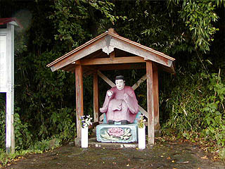 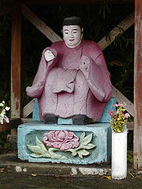
そのまた近く新田場の田の神さあ。ピンクと水色の色合わせが路傍の石像の域を越えていて面白い。これが神官型の典型例だ。
台座の彫刻や全体の造形からかなり高度な石彫技術が伺える。亨保5年製は県内最古。これもまた宮崎を代表する田の神さあと言っていいと思う。
しかし技術の上手い下手と豊作の御利益と見た目のインパクトの三者は決して一致しないところが民間信仰の深遠なるところである。
左手はロケットパンチ発射済み。
そんなこんなでいよいよえびの市に入る。
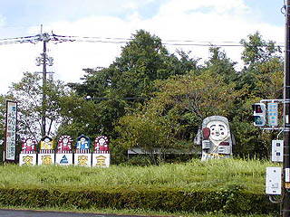
えびの市に入った途端この有り様。ちゃっかり交通安全まで祈願しちゃってます。
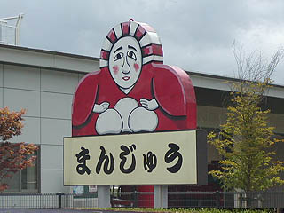 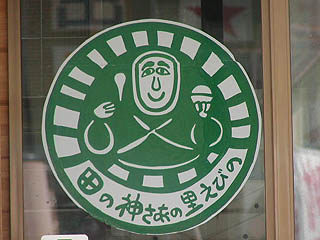
市内は田の神さあだらけ。こんなのを見ていたらこんなカタチの田の神さあだらけだと思われるかもしれないが、実際にはこのタイプの田の神さあはあまりない。
田の神さあのカタチや塗り方にはこれといって統一性がなく、それどころかペイントされているかどうかも集落によってまちまちだったりする。
従って農民型とか神官型とか分かれてはいるが、全く同じパターン化されたカタチのものはなく、かなりオリジナリティあふれた造形が見られる。
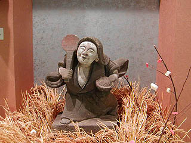 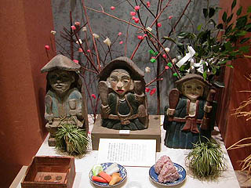
市内の文化センターらしきところに田の神さあの紹介コーナーがあったので寄ってみた。
笠、しゃもじ、茶碗、などのアイテムを装備しているケースが多い。農民型の田の神さあで唯一の共通項といったらそれくらいのものだ。
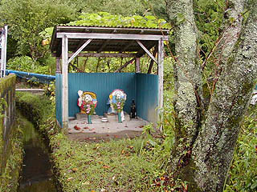 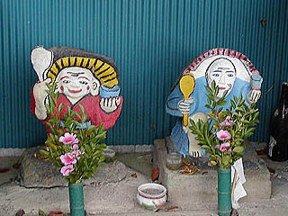
市北東部の麓という集落にあった田の神さあ。
二体並んで祭られている。気になるのは香炉らしきモノが置いてある事。神様にお線香ですか？ま、何でもいいですけど。
小さな用水路の脇にひっそりとあった。道から少し奥まったところにあったので見落としてしまい、近所の人に聞いたら慣れた口調で教えてくれた。
もしかしたらえびの市の田の神さあ巡りは私が想像している以上にメジャーなレジャーなのだろうか・・・
左の赤い着物の田の神さあは江戸末期、右の青い着物の田の神さあは明治中期のものらしい。もともと赤い田の神があったのだが独りでは淋しかろうと男神をつくって寄贈したらしい。つまり赤い着物の田の神さあは女神だったんですね・・・
末永にある田の神さあ。明治元年製。
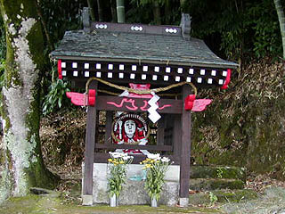 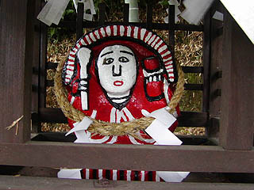
えびの市のシンボルともいえる田の神さあ。先程、町中で見かけた田の神さあのポスターや人形などは皆、この田の神さあをモチーフにしているみたい。
今でも5月4日には田の神さあを耕運機に乗せて三味線と太鼓で演奏しながら地区をまわるそうだ。
田の神さあにはおっといという不思議な習慣がある。農作物が不作だった地区の人達が他の地区の田の神さあを盗んで（おっとって）きて、3年程経ったらお礼を持って元の集落に返しに行くという。えびの市でも明治の終わり頃までは実際にあったそうである。ここ末永の田の神さあも何度かおっとられるという人気っぷり。それだけ霊験あらたかというか効き目のある田の神さあなのだろう。おっとられたままいなくなってしまいそのままどこかの神様になっちゃっている田の神さあも結構あるみたいだ。
神様があっちに行ったりこっちに行ったりするというのは面白い。移動するカミサマ。
赤と白と黒で塗りわけられた田の神さあはかなりデフォルメが効いていてユーモラスだ。そのとぼけた表情やデッサンのゆるさは神様である事を忘れさせてくれる程、愉快な石像である。
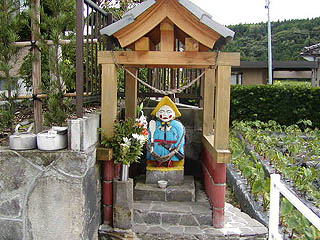 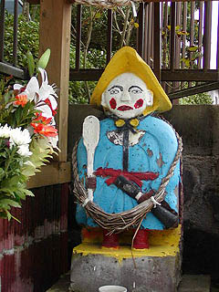
中浦の田の神さあは新しい住居の脇にあった。屋敷の新築にともなって祠も新調したのだろう。
しゃもじと杵を持っている。黄色い笠と水色の衣のカラーリングが堪らない。飛び出し坊やみたい。
昭和2年製。
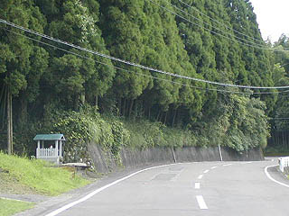 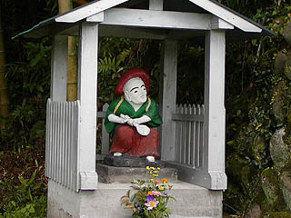
下浦にある田の神さあ。たすき掛けでやる気満々（何を？）。
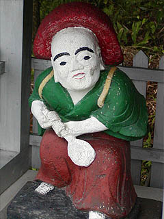 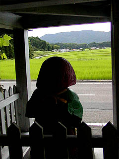
田の神さあはこうして毎日田んぼを見つめている。
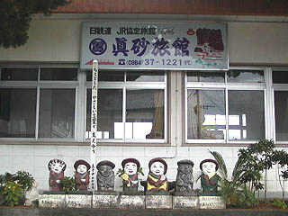
市内のJR京町温泉駅前にはこんな田の神さあが並んで観光客を迎えている。
恐らくホンモノではなくレプリカなのだろうがえびの市のシンボルとなっているのが伺える。
さらに温泉街の先には田の神通りという道があり、そこにも近年つくられた観光用の田の神がずらりと並んでいた。
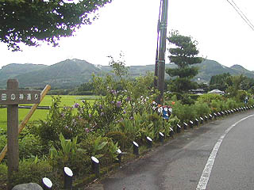 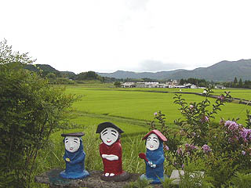
子供が作ったのだろうか。どれもまとまりのない、というか勝手気ままに作っている様がイイ。
観光用に神様をシンボル化する場合どれも同じカタチに統一されてしまい、没個性的になってしまいがちだが、ここの田の神さあは様々な造形が見て取れる。
元々、田の神さあはあまりに種類が多くて、というより一体一体が皆違う造形なので統一出来ないのだ。
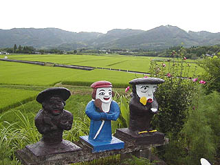 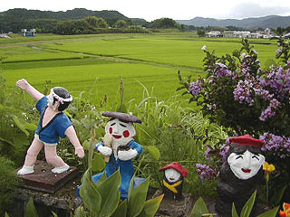
従って観光用にするにしてもコレが田の神さあだ！という形式がないので、取り敢えず末永の田の神さあをシンボライズしているがそれとて
沢山ある田の神さあのひとつのカタチでしかない。
その多様性、いいかえればいい加減具合が田の神さあの最大の魅力のように思える。
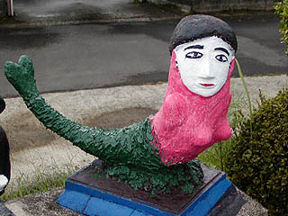
もう、これは田の神さあじゃあないでしょう・・・
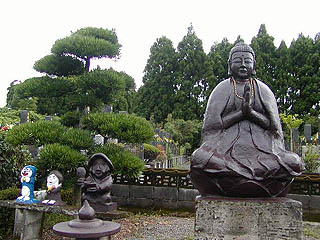
大仏、田の神さあ、ドラえもん。ドラも信仰の対象になっちゃったんでしょうか？
22世紀あたりには銅鑼右衛門大明神とかいって祭られちゃったりする可能性を完全に否定出来ない。
口から賽銭を入れて、おみくじが四次元ポケットから出て来そうな造形がドラの恐ろしいところである。
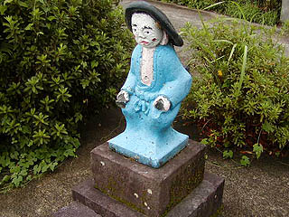
その道向かいにある田の神さあ。これはホンモノである。
持物が取れてしまっているが水色の着流しがオシャレだ。
こうして見ると、田の神さあはペイントされた石像ばかりだと思われがちだが、実際はえびの市内の田の神さあの内、色が塗られているのは半分位である。
しかも塗り直して奇麗にしてあるものは、さらにその半数かそれ以下だと思う。
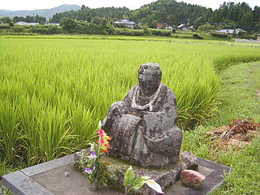
中内竪にある神官型の田の神さあ。亨保10年のもの。
市内では2番目に古い田の神像だ。
元々田の神さあの神像は稲作振興を奨励するために薩摩藩が作らせたのではないかという説がある。
もし、そうであっても御上が奨励した時点ではこんな様々な形体のカミサマが出現するとは思わなかったのでは。
これは田の神さあが最初は御上から押し付けられた「農神」であったとしても、結果的には人々に親しまれ、頼りにされていた何よりの証拠であろう。
2004.8.
珍寺大道場 HOME